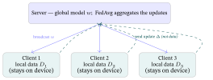
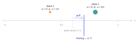

Appendix E — Federated & Privacy-Preserving Recommendation
Every model in this book assumed the training data sits in one place, a central log you can shuffle, split, and sweep. But what you watch, buy, read, and listen to is private: the paper that named federated learning (McMahan et al., 2017) starts from data that is often privacy sensitive, and regulation and user trust restrict collecting it into a central server (a claim from practice, not tested here). Federated learning asks the question that follows: can we train a single shared model without the raw data ever leaving the user’s device? The answer is yes, and recommendation adds a privacy twist: the items a client updates can reveal what it touched.
What this appendix assumes. It assumes gradient-descent training on a central dataset (Neural Networks & Back-propagation) and matrix factorization (Traditional Recommender Systems §5). It is a thin frontier appendix: a map, not a full course. It carries hand-checkable micro-examples (a federated-averaging step, and one user’s upload) and otherwise points to the standard references. The question it answers: how do you train a good recommender when the interaction data is too private to collect?
1. The idea: move the model, not the data
Federated learning inverts the usual flow. Instead of sending data to the model, you send the model to the data, and only model updates come back. One round of the standard protocol:
- the server broadcasts the current global model \(w\) to a sample of client devices;
- each client trains \(w\) for a few steps on its own local data (which never leaves the device), producing a local update;
- each client sends back only its update — what it changed, \(\Delta_k=w_k-w\) (after a single local step \(\Delta_k=-\eta g_k\), with \(\eta\) the learning rate and \(g_k\) the gradient on that client’s data; the federated matrix factorization of §3 sends gradients) — and its example count \(n_k\), never raw interactions;
- the server aggregates the updates into a new global \(w\), and the loop repeats.
The raw data stays put; what travels is math. “Federated” is the apt word — many autonomous parties cooperate on a shared model under a coordinator, like a federation of states, without surrendering their local sovereignty (their data). The server merges the clients’ updates with Federated Averaging (FedAvg), the rule of §2. The takeaway: the server learns from updates, not from the data that produced them.

2. FedAvg: aggregate by a data-weighted average
Ann’s phone trained on 1000 ratings and Bob’s on 5, and both send back an improved model: whose version should count more? The standard answer is Federated Averaging (FedAvg), McMahan et al. (2017): the new global model is the average of the clients’ local models, weighted by how much data each holds,
\[ w_{\text{global}} \;=\; \frac{\sum_k n_k\,w_k}{\sum_k n_k}, \]
where \(w_k\) is client \(k\)’s locally-updated model and \(n_k\) its number of local examples (the sums run over the round’s sampled clients). The weighting matters because clients hold unequal amounts of data.
Worked example — one FedAvg step. Take Ann’s and Bob’s phones again, now holding 30 and 10 examples. The server broadcasts a single parameter \(w=0.5\). Client 1 (Ann) has \(n_1=30\) local examples and ends at \(w_1=0.8\) (update \(\Delta_1=+0.3\)); client 2 (Bob) has \(n_2=10\) and ends at \(w_2=0.4\) (\(\Delta_2=-0.1\)). The data-weighted global is \[ w_{\text{global}} = \frac{30(0.8) + 10(0.4)}{30+10} = \frac{24+4}{40} = \mathbf{0.7}. \] The same result from the updates: \(0.5+\frac{30(0.3)+10(-0.1)}{40}=0.5+0.2=0.7\). Note it lands at \(0.7\), pulled toward the data-rich client 1, not at the plain mean \(0.6\) you would get by ignoring the counts. And the server learned this without seeing a single raw interaction from either device: only the updates (or the models \(w_1,w_2\)) and the counts crossed the wire (§3 shows what updates can still reveal). With \(n_2=10\) fixed, a client 1 of \(n_1=10,30,90,1000\) examples gives \(0.6,\,0.7,\,0.76,\,0.796\): the global moves toward the data-rich client and never past \(0.8\), because a weighted average lies between its inputs and \(n_1/(n_1+10)\) stays below \(1\).
The takeaway: FedAvg is a count-weighted average, so data-rich clients count for more but never override the others entirely.

3. Federated recommendation — and its rated-set leak
Cara’s phone holds her film ratings, and the service wants to learn from them without ever receiving them. Drop matrix factorization (Traditional Recommender Systems §5) into this loop and you get Federated Collaborative Filtering (FCF) (Ammad-ud-din et al., 2019, for implicit feedback): the item factors are the shared global model the server aggregates, while each user’s own factor vector stays on their device and is updated locally. A client computes from its private interactions how each item factor should change (a gradient) and sends only those gradients up.
One user’s upload, a toy with explicit ratings (scores the user gives, as against implicit feedback such as clicks or views; Traditional Recommender Systems §5.3–§5.4). Her user factor vector is \(\mathbf p_u=(1,0.5)\) and item \(i\)’s factor is \(\mathbf q_i\) (Traditional Recommender Systems §5.1). She has rated item 1 only, with \(r=1.35\), and item 1’s factor is \(\mathbf q_1=(0.9,0.7)\), so \(\mathbf p_u\!\cdot\!\mathbf q_1=0.9+0.35=1.25\) and the error on that rating is \(e=r-\mathbf p_u\!\cdot\!\mathbf q_1=0.1\).
For squared error, the gradient of \((r-\mathbf p_u\!\cdot\!\mathbf q_1)^2\) with respect to item 1’s factor \(\mathbf q_1\) is \(-2e\,\mathbf p_u=(-0.2,-0.1)\), and she uploads that, tagged with item 1’s id; other items, unrated, get none.
The server then sums the uploads for item 1 over all users and steps its factor against them, \(\mathbf q_1\leftarrow\mathbf q_1-\gamma\sum_u\mathbf g_{u1}\). This is a plain sum (FCF’s Eqs. 10-12), taking the regularizer weight \(\lambda=0\) so the server’s regularizer, the penalty on large factors of Traditional Recommender Systems §5.3, adds nothing. Here \(\gamma\) is the server’s step size, the \(\eta\) of §1 applied to the summed gradients, and \(\mathbf g_{u1}\) is user \(u\)’s upload.
For one user and \(\gamma=0.5\), \(\mathbf q_1\) moves by \((+0.1,+0.05)\), to \((1.0,0.75)\), so \(\mathbf p_u\!\cdot\!\mathbf q_1\) rises from \(1.25\) to \(1.375\), just past the target \(1.35\) (a step \(1.25\) times the gap). FCF applies the \(-2\) on the server; the toy uploads it.
Two things are visible to the server. If it can tell whose upload it is, an upload for item 1 says she rated item 1. And the uploaded gradient is a scaled copy of \(\mathbf p_u\), so \(\mathbf p_u\) itself is never sent, but every upload is a multiple of it and the server learns the line along which it points. The multiple \(-2e\) can be negative, so the server does not learn which way along the line. The upload is the squared-error part only; the regularizer is added on the server, as in FCF.
That is the rated-set leak, and it holds in this explicit-rating setting: sending an update for item \(i\) reveals that the user rated item \(i\) (when the server can tell whose update it is), because only rated items have a gradient. FCF as published uses implicit feedback and reports a gradient for every item, which hides the zero pattern. Whether the sign and size of its values still separate touched from untouched items is not tested here, and the values still carry \(\mathbf p_u\)’s line.
A note on step sizes: Traditional Recommender Systems §5.3 steps by \(\eta/2\) times the gradient (its \(\eta\) absorbs the 2), so the toy’s \(\gamma=0.5\) is \(\eta=0.5\) in §1’s sense and \(\eta=1\) in §5.3’s.
FedRec (federated recommendation with explicit feedback; Lin et al., 2021; see the glossary) addresses the rated-set leak by uploading gradients for extra randomly sampled unrated items (decoys, \(\rho\) of them per rated item) too, with virtual ratings filled in by a hybrid strategy (the user’s average rating or a predicted one), so the real interactions do not stand out among the decoys.
In the toy above, suppose she has rated only item 1, so her average rating is \(1.35\), and a decoy item 2 with \(\mathbf q_2=(0.6,0.5)\) gets that virtual rating: its error is \(1.35-0.85=0.5\) and its upload is \((-1.0,-0.5)\), a multiple of \(\mathbf p_u\) just like the real \((-0.2,-0.1)\), so the server sees two uploads and cannot tell from their direction alone which item she rated (the sizes differ, and here the decoy’s is five times the real one, so size would give it away in this toy; in general it cannot tell whether a large upload is a real rating with a big error or a decoy). With \(\rho=1\) here, the server is left a one-in-two guess by presence alone, and FedRec uses \(\rho\in\{1,2,3\}\). That value range is as FedRec++ (Liang et al., 2021), a later method that removes the decoy noise, describes it. The decoys add noise to the gradients, which costs accuracy, and they are an obfuscation; the stronger tools come next.
More generally, because raw gradients can still leak information, federated systems layer on two further tools.
Secure aggregation (Bonawitz et al., 2017): the server sees only the sum of the count-weighted updates, not any individual one. In §2 the sum \(30(0.3)+10(-0.1)=8\) gives \(0.5+8/40=0.7\), and the server never sees \(+0.3\) or \(-0.1\) alone.
Differential privacy (Dwork et al., 2006, applied to model training by Abadi et al., 2016: noise added to updates, so the server cannot be sure of any single value, at some cost in accuracy).
Real differential privacy clips each update to a maximum size and adds random noise whose scale is set by the privacy budget \(\varepsilon\) (a smaller \(\varepsilon\) means more noise and more privacy); the numbers here are not calibrated to any \(\varepsilon\). As an illustration only, if client 2’s \(-0.1\) were perturbed to \(-0.05\), the global would be \(0.7125\) rather than \(0.7\), a shift of \(0.0125\). For a survey of horizontal federated recommendation, with users’ devices as the clients, see Wang et al. (2024). The takeaway: with explicit ratings an upload still tells the server which items a user rated, and decoys and differential privacy trade some of that leak for accuracy.
4. The catch, and where it pays off
Ann’s rating values never leave her phone; what does the service pay for that? Federation is not free, and its costs are these:
- Communication cost. Many rounds of sending models to and from millions of devices is expensive; FedAvg’s several local steps per round exist to cut the number of rounds (its abstract reports \(10\) to \(100\) times fewer rounds than synchronized stochastic gradient descent, which averages after every step, Traditional Recommender Systems §5.3; the paper’s tables show speedups of up to \(95\) times, depending on the task and the baseline).
- Statistical heterogeneity. The clients’ data are not independent and identically distributed (non-IID): each user’s data comes from a different distribution (one watches only horror, another only cartoons), so local updates pull the shared model in different directions. FedAvg’s own paper reports it robust on its benchmarks; that naive averaging converges slowly or poorly on harder splits is a claim from practice, not tested here. Separately, clients hold unequal amounts of data (30 against 10 in §2), which the \(n_k\) weights handle.
- Residual privacy risk. Updates alone can leak; secure aggregation and differential privacy are needed for real guarantees, and differential privacy and decoys trade off against accuracy.
- An accuracy gap, sometimes. Some federated schemes lose accuracy against a centralized model trained on the same pooled data, a price of privacy: FedRec’s accuracy worsens as its decoys grow, by the account of FedRec++ (Liang et al., 2021), which removes that noise, while FCF reports no loss of accuracy against a standard implementation on its datasets. Measure it on your own data.
It pays off where the data is too sensitive or too regulated to centralize (health, finance, on-device personalization: claims from practice, not tested here; McMahan et al. (2017) motivate the approach with text entry on phones), the setting where the alternative is not “a slightly better central model” but no model at all. Like Appendix D (Reinforcement Learning for Recommendation), this is a pointer: an adjacent paradigm the book’s collaborative-filtering through-line touches at the edge (it is matrix factorization and gradient descent, rearranged for privacy) rather than a core chapter. The takeaway: federation buys privacy at the price of communication, heterogeneity and sometimes accuracy, so use it where the data cannot be centralized.
5. Glossary
| Term | Plain meaning |
|---|---|
| Federated learning | Train a shared model across devices that keep their raw data local; only updates are shared. |
| Client / server | Devices holding private data / the coordinator that aggregates their updates. |
| FedAvg | Aggregate by a data-size-weighted average of clients’ local models (McMahan et al., 2017). |
| FCF | Federated collaborative filtering: item factors are global; each user’s factor stays on-device (its uploads still carry the factor’s line, §3). |
| FedRec | Federated recommendation with explicit feedback (Lin et al., 2021): uploads gradients for decoy items as well as rated ones (§3); FedRec++ (Liang et al., 2021) removes the noise the decoys add. |
| Decoy items, hybrid filling | Randomly sampled unrated items whose gradients are uploaded with virtual ratings filled in (the user’s average rating or a predicted one), so the real ones do not stand out; \(\rho\) decoys per rated item (§3). |
| The rated-set leak | With explicit ratings, sending an update for item \(i\) reveals (to a server that knows whose it is) that the user rated \(i\), and the gradient is a scaled copy of the user’s vector; FedRec masks the rated set with decoy items (see §3). |
| Secure aggregation | The server sees only the sum of client updates, never any individual one (Bonawitz et al., 2017). |
| Differential privacy | Add calibrated noise to updates so that how much any single user’s data can be inferred is bounded — by a privacy budget \(\varepsilon\) (smaller means more noise and more privacy; not the exploration rate \(\varepsilon\) of the Bandits chapter), not reduced to zero; §3’s numbers are not calibrated to any \(\varepsilon\) (Dwork et al., 2006; Abadi et al., 2016). |
| Non-IID data (statistical heterogeneity) | Each client’s data comes from a different distribution (one user all horror, another all cartoons), so local updates pull the shared model in different directions — a core difficulty of federation. |
6. References
Entries follow the order of first use in this appendix, not the alphabet.
McMahan, B., Moore, E., Ramage, D., Hampson, S., & Agüera y Arcas, B. (2017). Communication-efficient learning of deep networks from decentralized data (FedAvg). In Proceedings of AISTATS (PMLR 54). arXiv:1602.05629
Ammad-ud-din, M., Ivannikova, E., Khan, S. A., Oyomno, W., Fu, Q., Tan, K. E., & Flanagan, A. (2019). Federated collaborative filtering for privacy-preserving personalized recommendation system. arXiv:1901.09888 (FCF; a preprint, no published version known).
Lin, G., Liang, F., Pan, W., & Ming, Z. (2021). FedRec: Federated recommendation with explicit feedback. IEEE Intelligent Systems, 36(5), 21–30. https://doi.org/10.1109/MIS.2020.3017205
Liang, F., Pan, W., & Ming, Z. (2021). FedRec++: Lossless federated recommendation with explicit feedback. Proceedings of the AAAI Conference on Artificial Intelligence, 35(5), 4224–4231. https://doi.org/10.1609/aaai.v35i5.16546
Bonawitz, K., Ivanov, V., Kreuter, B., Marcedone, A., McMahan, H. B., Patel, S., Ramage, D., Segal, A., & Seth, K. (2017). Practical secure aggregation for privacy-preserving machine learning. In Proceedings of the 2017 ACM SIGSAC Conference on Computer and Communications Security (pp. 1175–1191). https://doi.org/10.1145/3133956.3133982
Dwork, C., McSherry, F., Nissim, K., & Smith, A. (2006). Calibrating noise to sensitivity in private data analysis. In Theory of Cryptography (TCC 2006), LNCS (pp. 265–284). https://doi.org/10.1007/11681878_14
Abadi, M., Chu, A., Goodfellow, I., McMahan, H. B., Mironov, I., Talwar, K., & Zhang, L. (2016). Deep learning with differential privacy. In Proceedings of the 2016 ACM SIGSAC Conference on Computer and Communications Security (pp. 308–318). https://doi.org/10.1145/2976749.2978318
Wang, L., Zhou, H., Bao, Y., Yan, X., Shen, G., & Kong, X. (2024). Horizontal federated recommender system: A survey. ACM Computing Surveys, 56(9), 1–42. https://doi.org/10.1145/3656165 (a current survey of the field; its abstract covers privacy-preserving techniques).
FedRec’s own text was not read: its decoy mechanism is taken from FedRec++’s description of it.